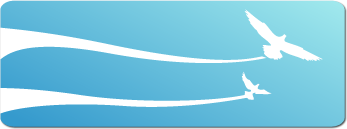
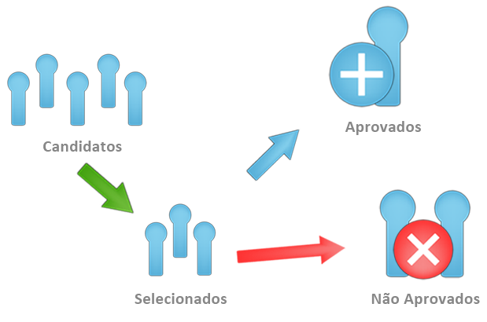

No que acreditamos:
Dedicação, inovação, paixão e cultura. Nisso acreditamos e assim nós trabalhamos. Nossos valores são as sementes plantadas em tudo o que fazemos
Para ser um membro:
Você está em busca de estágio ou estagiando? Se sim:
Pague a taxa de R$ 20,00 e Participe das três estapas do processo. Ao fim, se você obtiver o resultado positivo, receberá um perfil em nossa rede social Alis, sem nenhuma mensalidade.

Quais as vantagens?
Quando você se torna um membro Alis, sua visualização no mercado de trabalho aumenta. Além disso, a Alis estará ao seu lado para capacitá-lo e guiá-lo, tanto para conseguir estágio, na hora das entrevistas e durante o período de trabalho. Nós voamos juntos.
Como funciona?
Os candidatos devem passar pelas três etapas do processo. Após a seleção, serão informados se foram aprovados ou não. Os aprovados ganham um perfil na rede social e se tornam membros Alis. Os que não foram aprovados podem tentar novamente após 2 meses.
